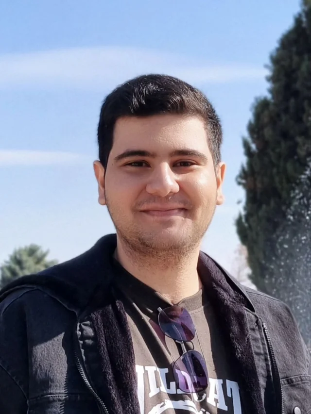

Hi, I’m Kiarash.FRONT-END DEVELOPER / STUDENTI started learning web development with HTML and CSS, then moved into JavaScript and React by building projects. I still enjoy working close to the browser because the feedback is immediate: change something, test it, and see what actually feels better.
Before Computer Engineering, I studied Chemical Engineering at Amirkabir University. The subjects changed, but the way I approach problems did not: break things down, test an idea, keep what works, and adjust what does not.
Outside coursework, I keep a few projects moving, rebuild interfaces I want to understand, and make small experiments just because they seem interesting. This portfolio is mainly a place to introduce myself and keep that work together.